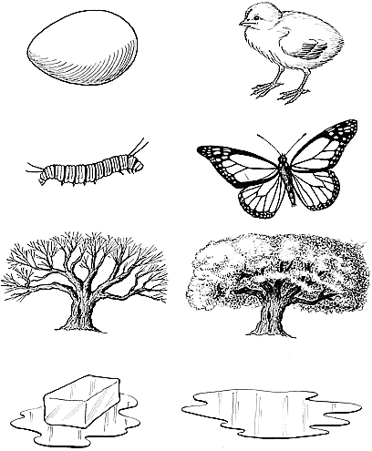

|  |
| Fig. 321.01 Universe as "A Minimum of Two Pictures": Evolution as a transformation of nonsimultaneous events: the behavior of "Universe" can only be shown with a minimum of two pictures. Unity is plural and at minimum two. (Drawings courtesy Mallory Pearce) |